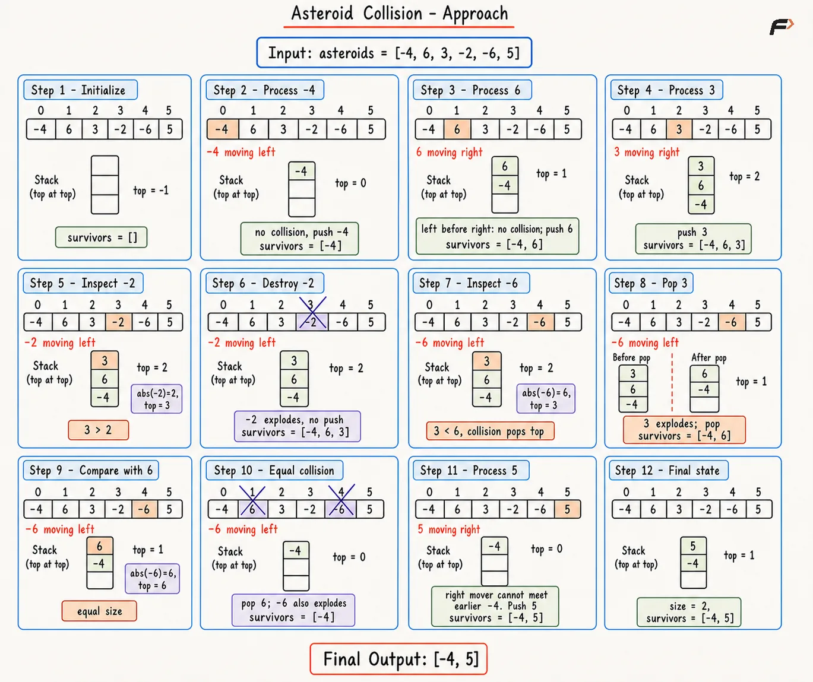

Asteroid Collision: Stack-Based Solution
An integer array asteroids is given. Each value represents one asteroid in a row. The absolute value represents size, a positive value means movement toward the right, and a negative value means movement toward the left.
All asteroids move at the same speed. When two asteroids meet, the smaller asteroid explodes, and the larger asteroid keeps moving in the same direction. When sizes are equal, both asteroids explode. Asteroids moving in the same direction never meet. Return the final state after all collisions.
Example 1
Input: asteroids = [5, 10, -5]
Output: [5, 10]
Explanation: Asteroid 10 destroys asteroid -5 and keeps moving right. Asteroid 5 and asteroid 10 move in the same direction, so no collision happens.
Example 2
Input: asteroids = [8, -8]
Output: []
Explanation: Asteroid 8 and asteroid -8 have equal size, so both asteroids explode.
Approach
A new left-moving asteroid first collides with the nearest earlier right-moving asteroid. If that asteroid explodes, the next nearest right-moving asteroid is checked. Therefore, the most recently stored asteroid must be processed first, which follows the LIFO order of a stack.
Asteroids moving away from each other never collide, so only earlier right-moving asteroids need to be checked. An array-based stack works well because adding, checking, and removing the last asteroid are fast, and the final remaining asteroids can easily be returned as an array.
Algorithm
Begin with an empty array named
survivorsso stack operations and final answer storage use the same simple structure.Move through
asteroidsfrom left to right because only already-seen asteroids can stand in front of the current asteroid.Store every right-moving asteroid directly, because earlier asteroids cannot move toward a new right-moving asteroid.
Treat every left-moving asteroid as an incoming challenger, and keep the absolute size so comparisons use size instead of direction sign.
Remove smaller right-moving asteroids from the end of
survivors, because each smaller asteroid explodes before the incoming asteroid can move farther left.Stop the collision chain if an equal or larger right-moving asteroid is found, because equal size removes both asteroids and larger size destroys the incoming asteroid.
Store the left-moving asteroid after all blockers disappear, so the final answer retains the surviving left mover.
Return
survivorsbecause the array keeps all remaining asteroids in left-to-right order.
Dry Run

Asteroid Collision
Solution
#include <bits/stdc++.h>
using namespace std;
class Solution {
public:
// Simulates asteroid collisions with an array stack.
vector<int> asteroidCollision(vector<int>& asteroids) {
vector<int> survivors;
// Process asteroids from left to right.
for (int asteroid : asteroids) {
// A right mover cannot hit earlier asteroids.
if (asteroid > 0) {
survivors.push_back(asteroid);
} else {
int currentSize = abs(asteroid);
bool destroyed = false;
// Check only right movers nearest to the asteroid.
while (!survivors.empty() && survivors.back() > 0) {
int topSize = abs(survivors.back());
// Smaller right movers explode first.
if (topSize < currentSize) {
survivors.pop_back();
} else {
// Equal size removes the stored asteroid too.
if (topSize == currentSize) {
survivors.pop_back();
}
destroyed = true;
break;
}
}
// Store a left mover after every blocker is gone.
if (!destroyed) {
survivors.push_back(asteroid);
}
}
}
return survivors;
}
};
// Driver code
int main() {
vector<int> asteroids = {10, 2, -5};
Solution obj;
vector<int> answer = obj.asteroidCollision(asteroids);
for (int value : answer) {
cout << value << " ";
}
return 0;
}Complexity Analysis
Time Complexity: O(N), because each asteroid is added to the array stack at most once and removed from the array stack at most once.
Space Complexity: O(N), because the array stack can store all N asteroids in a no-collision case.
Interview follow-up Questions
A positive value moves right and a later negative value moves left, so both asteroids move toward each other. Two positive values, two negative values, or a negative value before a positive value move apart or in the same direction.